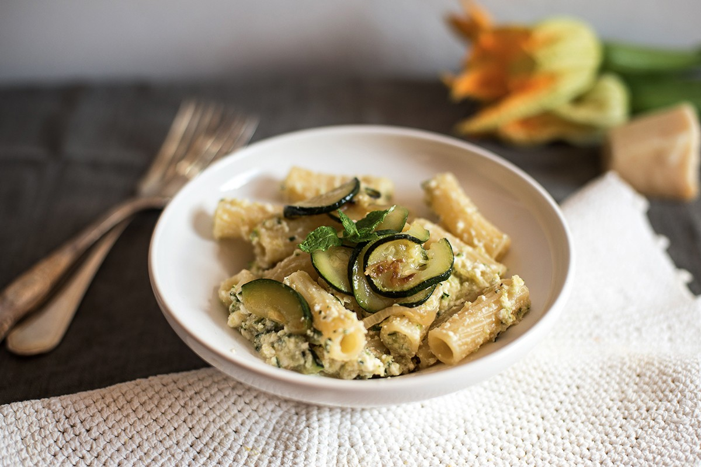

Zuccini and Ricotta Pasta

Description
Zucchini ricotta pasta is a creamy, light pasta dish featuring tender zucchini sautéed with garlic and mixed into a smooth ricotta and Parmesan sauce. Fresh herbs and a hint of lemon zest add brightness, while a dash of red pepper flakes provides a subtle kick. Perfect for a quick, satisfying, and flavorful meal!
Ingredients
- 2 medium zucchinis, sliced or grated
- 2 tablespoons olive oil
- 2 cloves garlic, minced
- Salt and pepper, to taste
- 1 cup ricotta cheese
- 1/2 cup grated Parmesan cheese (plus more for garnish)
- 1/4 cup fresh basil, chopped (or use fresh parsley for a different flavor)
- Zest of 1 lemon (optional for brightness)
- 1/4 teaspoon red pepper flakes (optional for heat)
- 12 oz pasta (like spaghetti, linguine, or penne)
Steps
- In a large pot, bring salted water to a boil. Add pasta and cook until al dente according to package instructions. Reserve about 1 cup of pasta water, then drain the pasta.
- While the pasta cooks, heat olive oil in a large skillet over medium heat. Add minced garlic and cook for 1-2 minutes until fragrant, being careful not to burn it.
- Add the zucchini, season with salt and pepper, and sauté until softened, about 5-7 minutes.
- In a large mixing bowl, combine ricotta, Parmesan cheese, lemon zest (if using), and red pepper flakes. Stir well to combine.
- Add the drained pasta to the skillet with the zucchini. Pour in the ricotta mixture and a bit of the reserved pasta water, stirring everything together until creamy. Add more pasta water as needed to reach your desired consistency.
- Stir in the chopped basil or parsley.
- Serve immediately, garnished with extra Parmesan and a sprinkle of fresh basil or parsley, if desired. Enjoy!